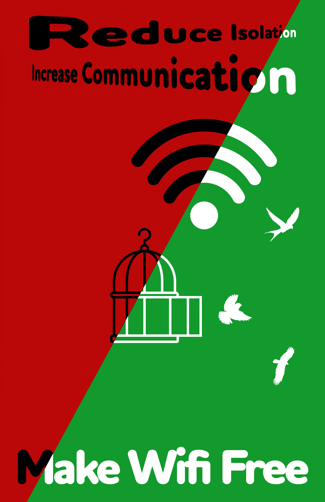
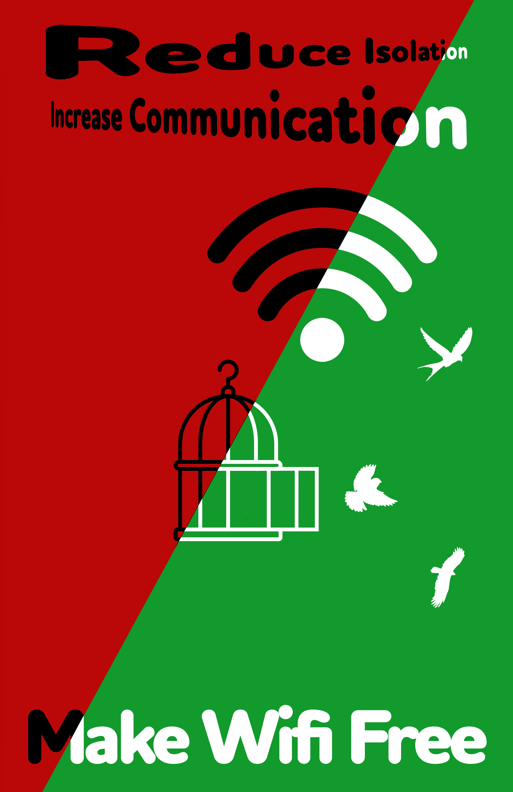
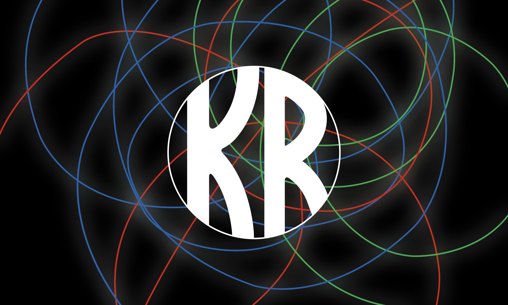
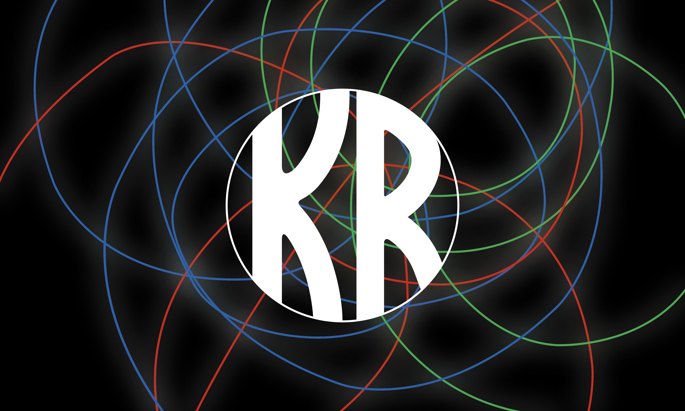

This page will give you a taste of my favorite/best images I have created. This page includes artwork from Graphic Design 1 and 2, Digital Photography and Animation. If you want to see all of my artwork, click This Link. If you would like to see other websites I have made, click This Link , Files must be downloaded for them to work properly.
Graphic Design 1
 


This is my surrealism project. For this project, I created a surreal image using dice with wings and distorted background features. This image is one of the first major projects I have made at Wayzata High School and is still, I think, one of my favorite projects.
This is my poster project. The task for this project was to make a poster for a cause that you think is a reasonable cause. In my case, I chose to make a poster that calls for Wi-Fi to be a free amenity. The poster depicts birds flying free from a cage representing the freedom that Wi-Fi access allows for. This was my last project in Graphic Design 1, and I think it absolutely turned out exactly how I wanted it to. This is my third favorite project from this class.
This is my lines project. In my opinion, it is the best project I have ever done. For this project, I was tasked with taking an image and making it into digital line art. This project turned out better than I could have ever expected and is one of my favorite projects I have ever created.
Graphic Design 2

 

This is my Shades of Brown Poster. This poster was an attempt to create an ad poster for the Shades of Brown concert in February. Unfortunately, my poster was not picked to run in the final vote, but I think it is still one of my best works from Graphic Design 2.
This is my Visual Narrative Project. The task of this project was to visualize a story from my past in a more fun or surreal way. This picture represents a memory of the first sunset I saw when moving here to Minnesota in 2020. It was one of the most beautiful sunsets I have ever seen and still is. This project means a lot to me because it is one of the only hand-drawn projects I have done that turned out better than I could have ever expected.
This is my Building a Brand project. My job was to make a business card and logo for a fictional company. I decided to brand myself as a photographer and graphic designer. My company was called "Kieran Rose Digital Design." This project is my favorite project in Graphic Design 2 because the logo and business card turned out beautiful and so much better than expected. The background is inspired by one of the pictures of light painting I took in digital photography.
Digital Photography 1


This is a part of a personal project of mine I called "Photoshop_Crazy." At the end of the term, I had about 3 days of time where I had already completed everything in the class. So, I decided to select 6 images to add to Photoshop and experiment on. I tried nearly every setting, filter and tool on Photoshop and ended up with 6 beautifully odd images. One of the images is actually the background of this website. The rest of the images are in my Photoshop_Crazy Portfolio, linked here. This image is a part of a computer chip. I think these are the best images I have ever created.
This is a part of my Slow Shutter Speed project. In my opinion, this is my favorite image that was not edited in any way. This type of image is called light painting. It is done by changing the camera's shutter speed to a long time, in my case, 30 seconds. Then, with no light in the background, you can use small lights to draw lines. When originally looking at the image, I wasn't too thrilled to see the result. But I later warmed up to it. Now, I think it is one of my best unedited images.
This is one of the first images I took with a digital camera, instead of my phone or iPad. The task was to experiment with the camera settings. Because of that, there are 3 nearly identical images taken of this scene. I deemed this one the best out of the three. I think this image looks gorgeous with the sun glare on the window and the low angle of the shot giving a nice view of the sky.